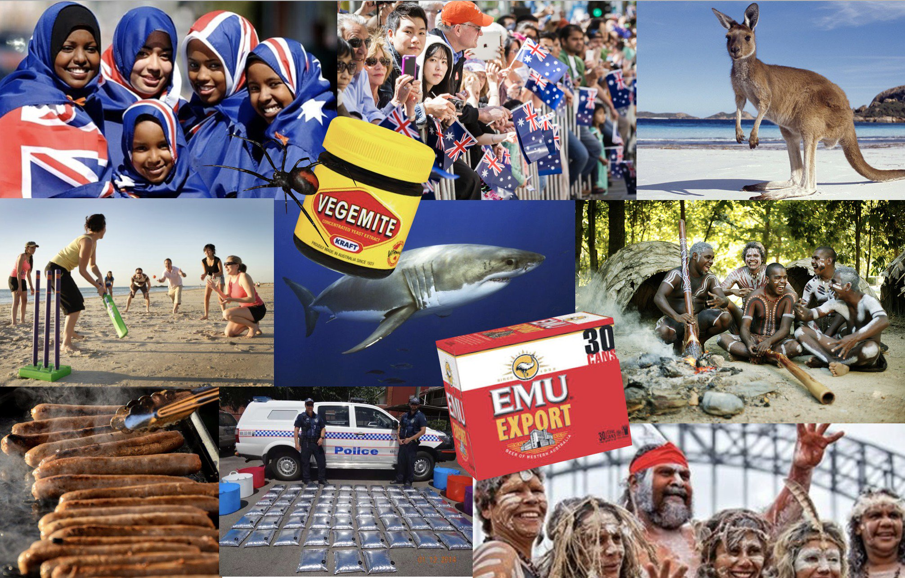

Australia

The Indigenous Australian people, who have inhabited the continent for thousands of years, are the original inhabitants of the land. They have a rich and diverse culture, comprising many different Aboriginal and Torres Strait Islander groups, each with their own languages, traditions, and customs. Additionally, the Australian population consists largely of immigrants. English is the main language of Australia.
Australian culture refers to the unique set of traditions, customs, beliefs, values, arts, and practices that have developed in Australia, a country and continent located in the Southern Hemisphere. Australian culture is influenced by a variety of factors, including indigenous heritage, British colonial history, multiculturalism, and a connection to the land and the environment.
Indigenous Heritage:
The Indigenous peoples of Australia, including Aboriginal and Torres Strait Islander peoples, have a rich cultural heritage dating back tens of thousands of years. Indigenous art, storytelling, music, dance, and spirituality play a significant role in Australian culture and are recognized as essential components of the nation's identity.
Outdoor Lifestyle:
Australia's natural environment plays a central role in its culture. Australians are known for their love of outdoor activities, such as swimming, surfing, bushwalking, camping, and barbecues (referred to as "BBQs"). The beach culture is particularly prominent due to the country's extensive coastline.
Sports:
Australians are passionate about sports, and several sports hold a special place in the country's culture. Cricket, Australian Rules Football (AFL), rugby (both league and union), soccer, tennis, and swimming are among the most popular sports in Australia. Sporting events, such as the Australian Open, Melbourne Cup (horse racing), and AFL Grand Final, are significant cultural events.
Multiculturalism:
Australia is a multicultural society, with a diverse population that includes people from various cultural backgrounds. This diversity is reflected in the arts, music, cuisine, festivals, and celebrations throughout the country. Australians embrace and celebrate the contributions of different cultures and value cultural diversity.
Larrikinism and Humor:
Australians have a reputation for their sense of humor and laid-back attitude, often characterized by "larrikinism." This refers to a cheeky, irreverent, and relaxed approach to life, with a tendency to not take oneself too seriously.
Arts and Literature:
Australia has a vibrant arts scene, with a rich tradition of literature, visual arts, theater, film, and music. Australian authors, artists, and filmmakers have made significant contributions to the cultural landscape, both domestically and internationally.
Food and Drink:
Australian cuisine has evolved over time, influenced by Indigenous ingredients, British heritage, and multicultural influences. Barbecues, seafood, meat pies, Vegemite (a popular spread), and a range of international cuisines can be found in Australian dining. The country is also known for its wine production, with regions such as the Barossa Valley and Margaret River renowned for their vineyards.